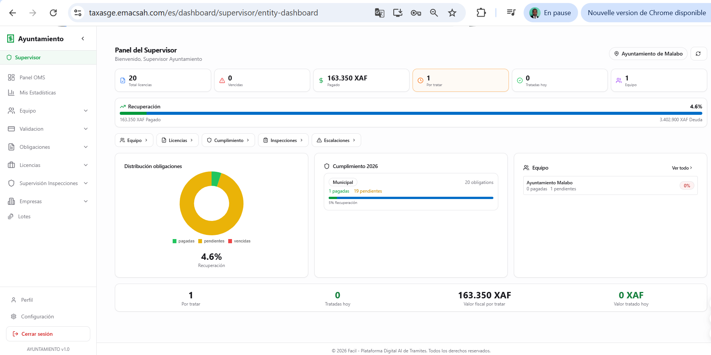
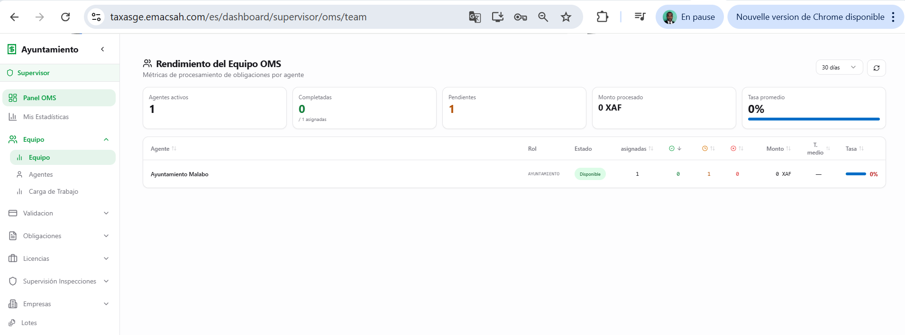
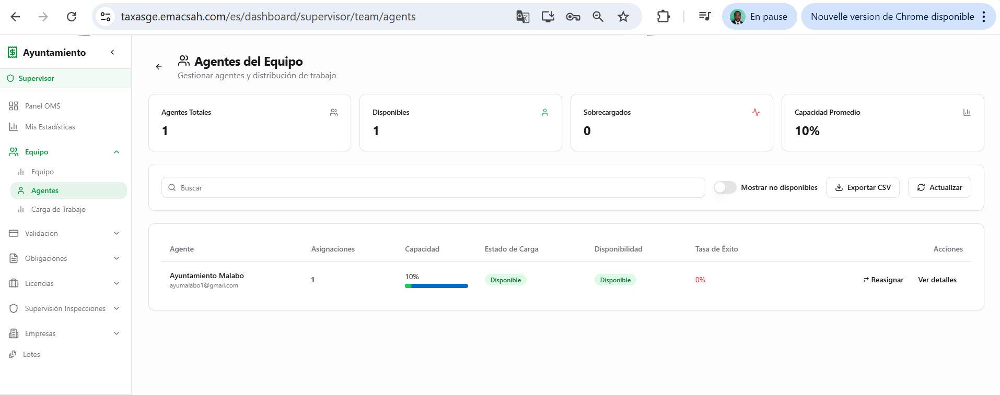
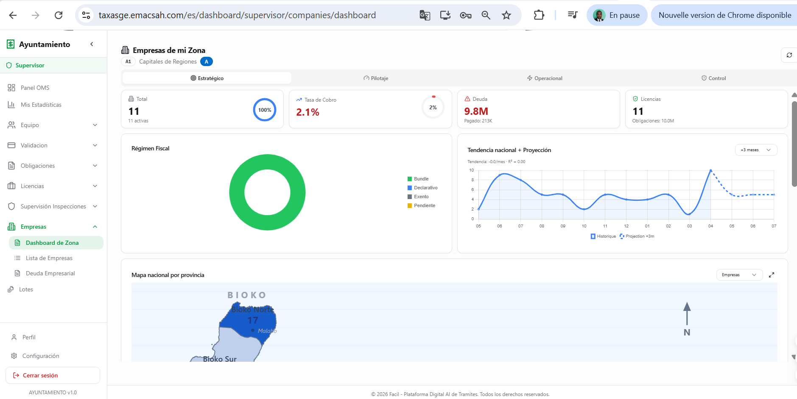
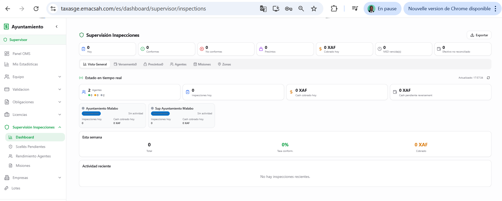
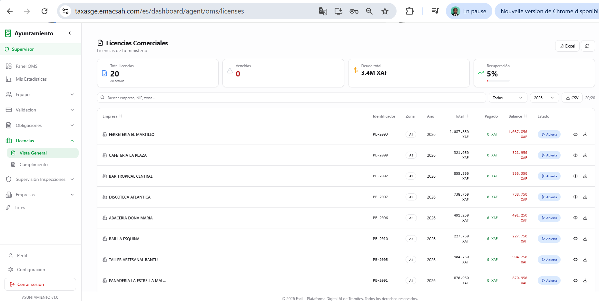
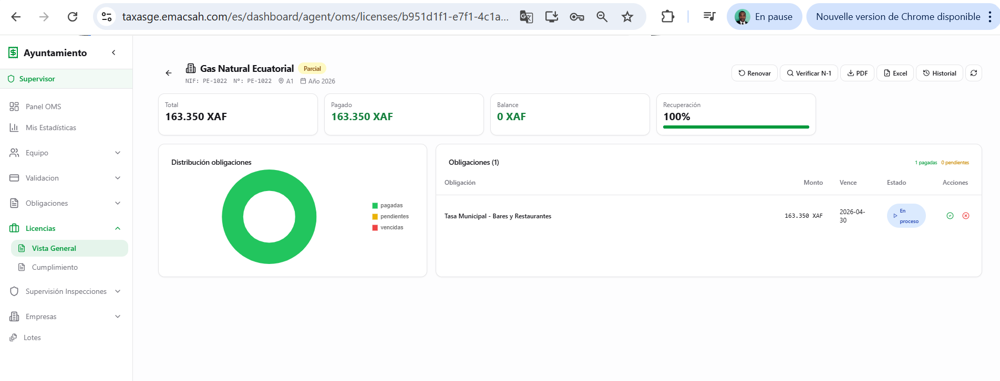
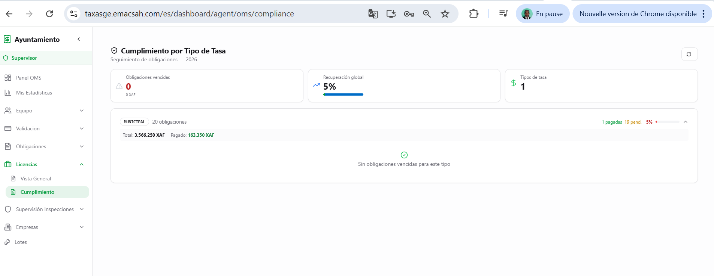
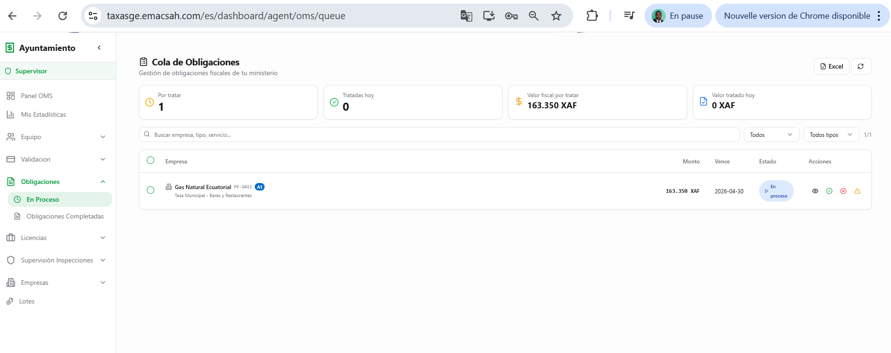
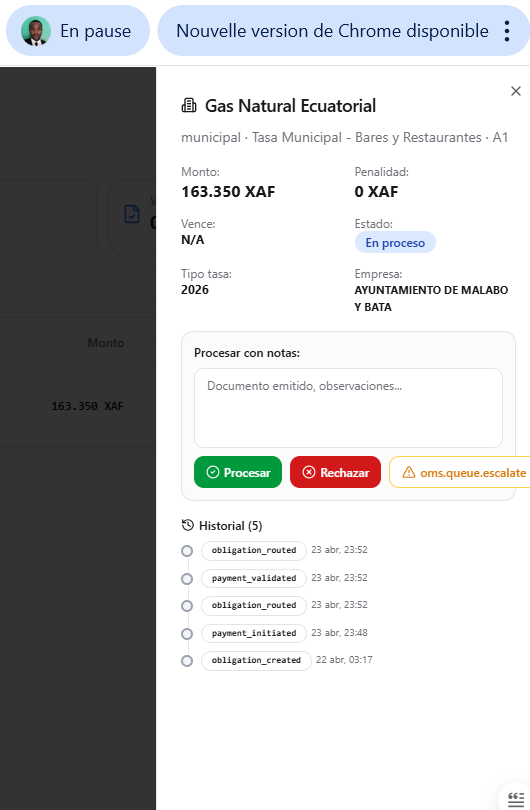

Supervisor Ayuntamiento + Cámara : back-office local
Los supervisores municipales (Ayuntamiento) y los de la Cámara de Comercio comparten un back-office común con los KPI propios a su entidad : licencias comerciales gestionadas, empresas registradas, obligaciones por tipo, inspecciones locales. La vista es más sencilla que la del Tesoro porque el ámbito geográfico es local (un municipio) y los volúmenes son menores.
1. Dashboard supervisor local
Las pantallas principales agrupan KPIs municipales : número de empresas activas, licencias en curso, vencimientos próximos, recaudación del mes.



2. Empresas registradas en el municipio
La sección Empresas lista todas las entidades comerciales registradas en el ámbito municipal con su NIF, su licencia comercial activa, su estado de pago de las obligaciones locales.

3. Inspecciones municipales
A diferencia del Tesoro o de OMS, las inspecciones municipales son más ligeras (control de actividad comercial declarada vs realidad terrain). El supervisor las programa, las asigna a un inspector municipal, y valida los resultados.

4. Licencias comerciales locales
Tres pantallas dedicadas a la gestión de las licencias comerciales : lista global, detalle de una licencia, vista por categoría/sector.



5. Obligaciones locales (tasas + cuotas)
Las obligaciones agrupan las tasas municipales (mercado, cementerio, obras, ocupación vía pública, fee_type=municipal) y las cuotas Cámara (inscripción anual, actualizaciones estatutos, fee_type=chamber). El supervisor monitorea los vencidos y planifica relances o inspecciones.


Validación de cobros field-collected (inspecciones OMS terreno)
Los pagos cobrados en terreno por los agentes OMS durante las inspecciones (ver página 69 y la mención en página 64 §6) llegan a la cola Ayuntamiento o Cámara con collection_type='field' y workflow_status='field_collected'. Para validarlos definitivamente y permitir la generación del recibo oficial REC-{año}-{6 dígitos}, el supervisor Ayu/Cám llama el endpoint POST /inspections/reconcile/supervisor/{payment_id}/validate (permiso inspection.reconcile_validate). Este endpoint invoca LicenseService.on_payment_completed() que enruta entonces la obligación al agente Ayuntamiento (fee_type=municipal) o Cámara (fee_type=chamber) competente.
6. Comparación con el supervisor Tesoro
El supervisor municipal tiene un periodo de validez más corto y un ámbito más restringido :
| Aspecto | Supervisor Tesoro | Supervisor Ayu/Cám |
|---|---|---|
| Ámbito | Nacional, todas zonas | Local (un municipio o una Cámara) |
| Volumen típico | ~500 transacciones/día | ~50 transacciones/día |
| Vista panorámica | 7 secciones, IA financiero, exports BEAC/SAGE | 5 secciones, vista municipal sencilla |
| Reporting | Ministerio + BEAC + DGI | Ayuntamiento + Cámara local |